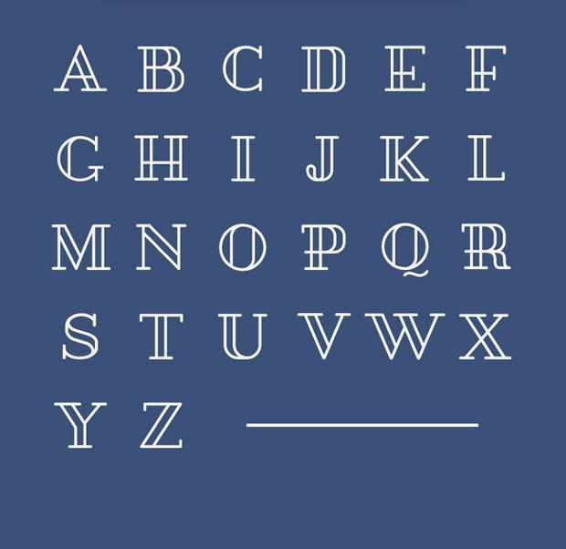

Tipografía
El tamaño de letra debe variar en función del tamaño de la pantalla en que se muestra la web.

Imágenes y vídeos
Una web responsiva debe contener imágenes y vídeos que se muevan y escalen en función de las proporciones de la pantalla.

Menús, botones, CTHay que prestar especial atención en la diferencia entre cómo el usuario accede a estos botones a través del ordenador, mediante el ratón, y a través del móvil o los Tablet, en los cuales las pantallas son táctiles y más reducidas. Regresar al menú |

Media QueriesSon una de las funcionalidades más importantes a considerar en un diseño web responsive. Permiten a los desarrolladores crear diseños flexibles que se adaptan automáticamente sin pérdida de calidad, independientemente del dispositivo desde el que se vean. |